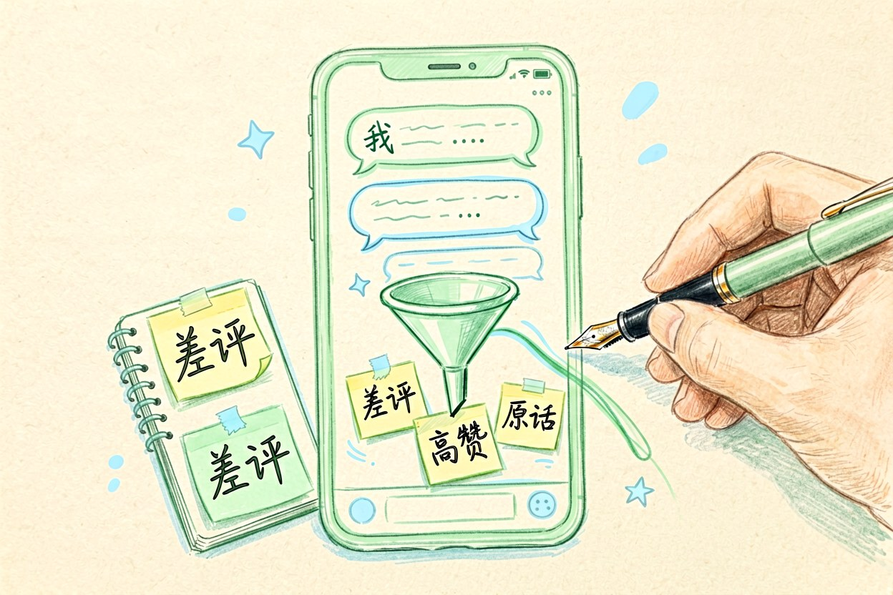
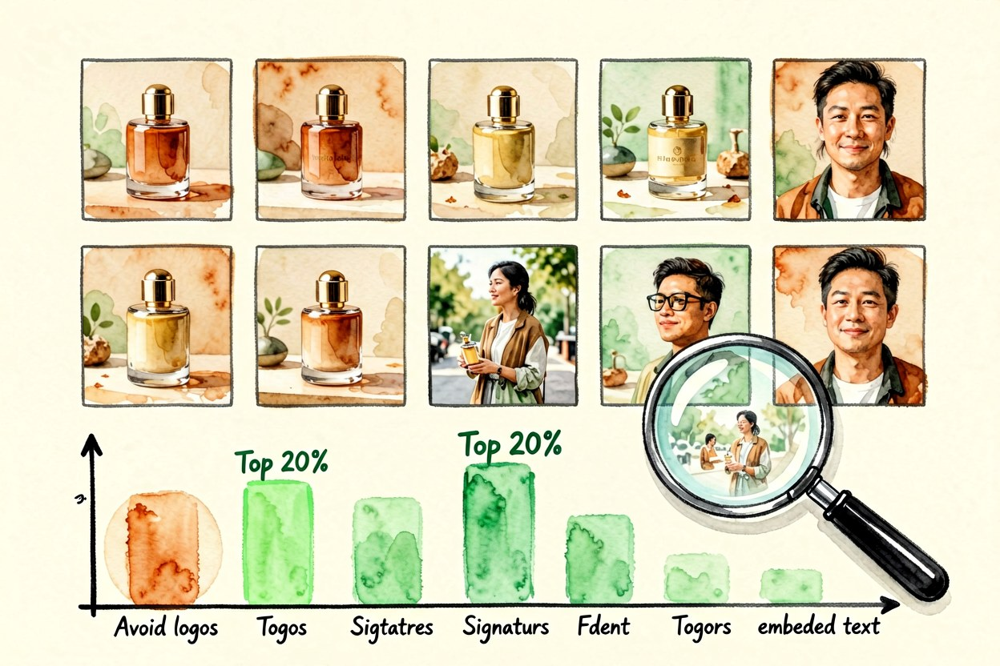
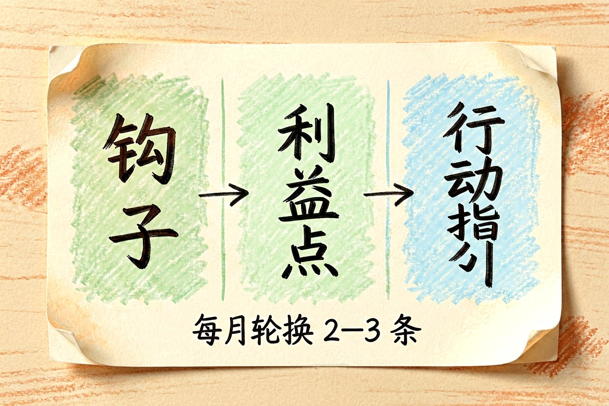
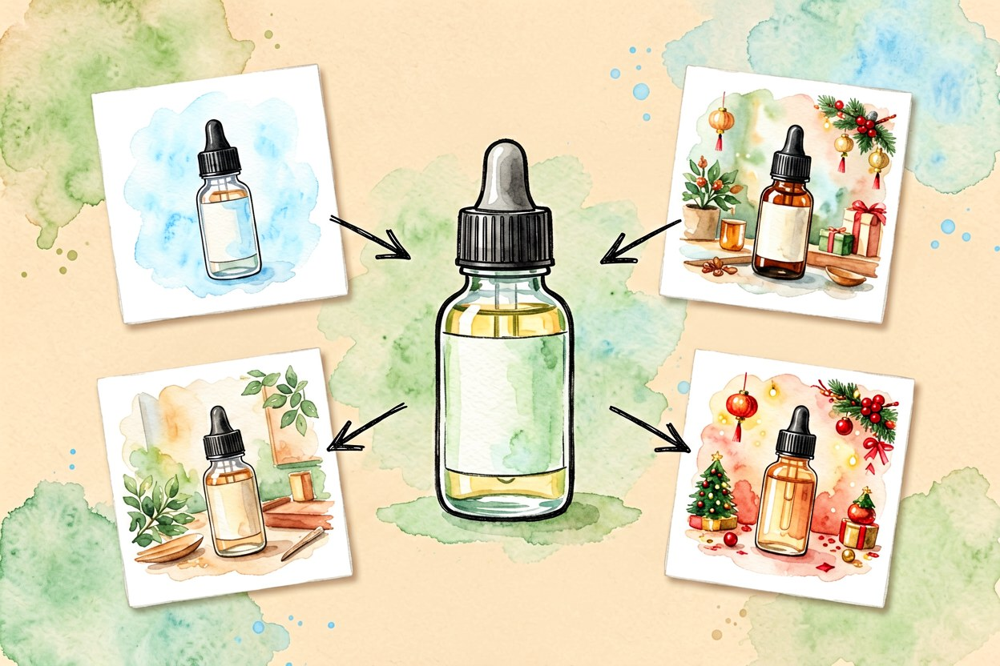
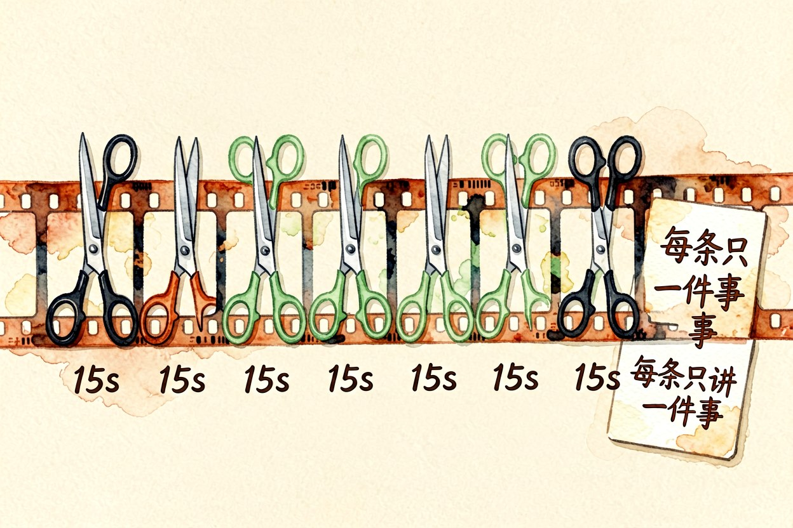
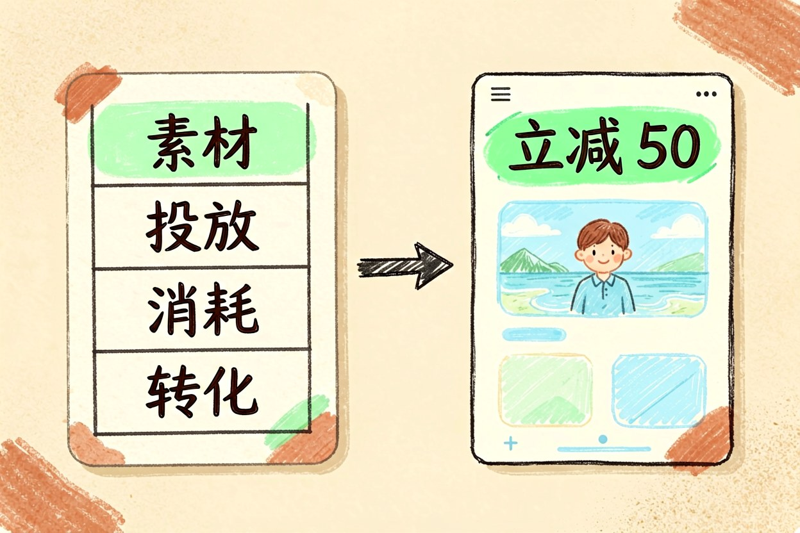

AI 广告素材怎么批量生产：七个可复用的方向
素材不够用，通常不是创意枯竭，而是没有把同一组卖点拆成可以反复组合的零件。
AI广告素材要解决的是产出速度，不是创意灵感。把一条广告拆成卖点、画面、话术、落点四个零件，每个零件单独批量生产再组合，能出的版本数量是乘法关系。下面七个方向都是实际跑得通的。
AI广告素材第一路：从评论区挖卖点

先别自己拍脑袋想卖点。把同类商品下的差评和高赞评论整理出来，让模型按出现频率归类，每条提炼成一句用户原话。真实的原话比营销话术有穿透力，也更容易找到用户真正在意的点。这一步产出的不是文案，而是后续所有素材的选题库。整理一次能用一整季，值得认真做。
二、批量出图做小范围测试

一次生成十二到二十张同主题不同构图的图，用最低预算跑一轮投放测试，留下点击率前百分之二十的构图，再放大做高清版本。不要一开始就精修一张图，赌对了浪费，赌错了更浪费。测试阶段的图分辨率够用就行，重点看构图和主体是否抓眼。测出来的构图规律要记下来，它会反复用到。数据比感觉准。
三、口播稿模板化

把口播稿拆成固定结构：前三秒的钩子、中间的利益点、结尾的行动指令。钩子部分准备十种句式轮换，中间替换具体卖点，结尾保持统一。这样每次写稿只改中间一段，五分钟能出十条。要避免的是每条稿子都重新起头，那等于每次都在从零开始。句式用旧了效果会衰减，每月换掉两三条。
钩子：<反常识结论> / <具体场景> / <对比数字>
利益点：<卖点> + <可验证的细节>
结尾：<行动指令> + <低门槛理由>四、换背景不换主体

同一张产品图，替换背景就能得到适用于不同人群和场景的版本。电商主图要干净白底，社交平台要生活场景，节日节点要氛围感。保持主体不变的好处是品牌识别度一致，观众看到的是同一个产品在不同场景里的样子，而不是一堆互不相干的图。主体边缘的处理要多花点时间，抠图毛边在手机上特别明显。
五、长视频切成多条短素材

一条三分钟的产品讲解，按信息点切成八到十二条十五秒素材，每条只讲一件事。切片比重新拍摄便宜得多，也让同一次拍摄产出更多可投放的内容。切口位置要选在句子结束处，别切在半句话中间，否则观众前两秒听到的是半截话，直接划走。切完之后给每条素材单独起名，方便后续看数据。
六、素材库与落地页的配合

素材会疲劳，同一条素材跑两周效果就会明显下滑。建一个表格记录每条素材的投放时间、消耗和转化，每月清一次，把连续下滑的归档到另一套素材里。留着旧素材的价值是复用其中的构图和话术，而不是重新投一遍。淘汰的标准要提前定，别等到数据难看才想起换。
素材承诺什么，落地页第一屏就要给什么。素材说立减五十，落地页首屏要能看到这个数字，否则点击来了也留不住。文字、配色、主图尽量沿用同一套，让用户感觉是同一个地方。这一步经常被忽略，却是转化率最容易受益的地方。
AI广告素材的价值不在数量，而在同一套逻辑下能稳定复现。别把所有素材都交给模型一次生成，也别用同一套模板跑到底。每周留一点时间看真实数据，模型能替你产出数量，判断哪条值得加预算这件事，还得你自己来。
本文信息核对于 2026-09-14。AI 产品的价格、免费额度与功能变动频繁，实际以各工具官网当前说明为准。